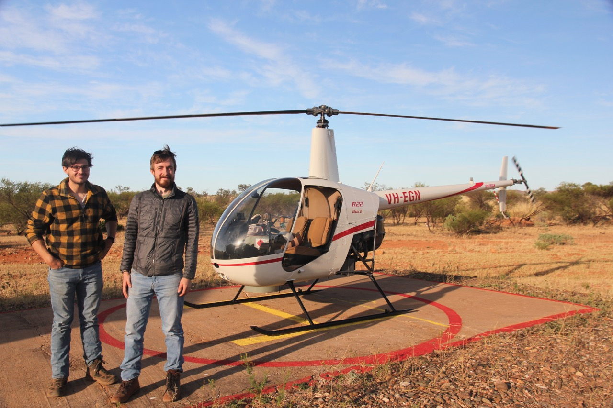
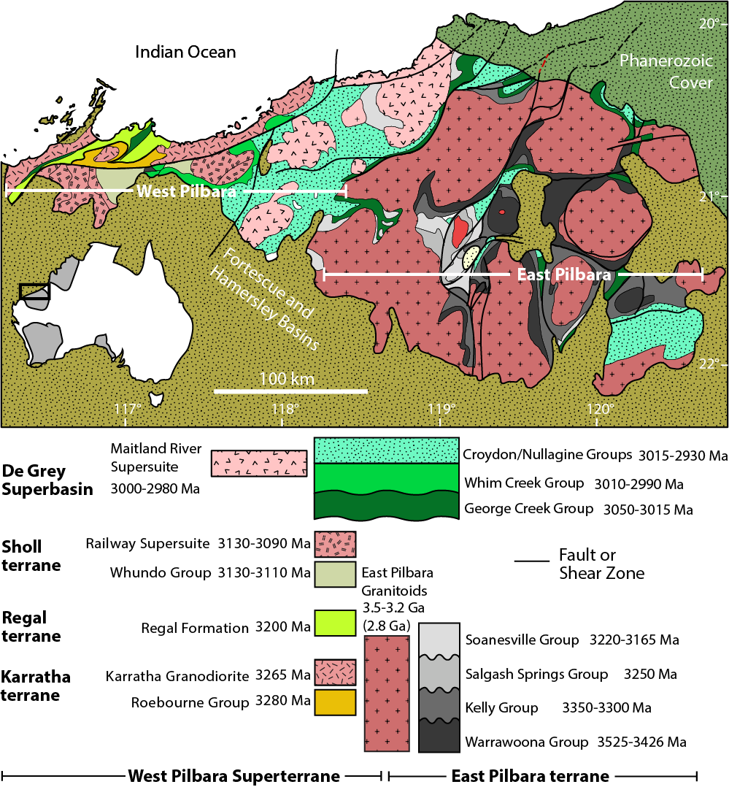
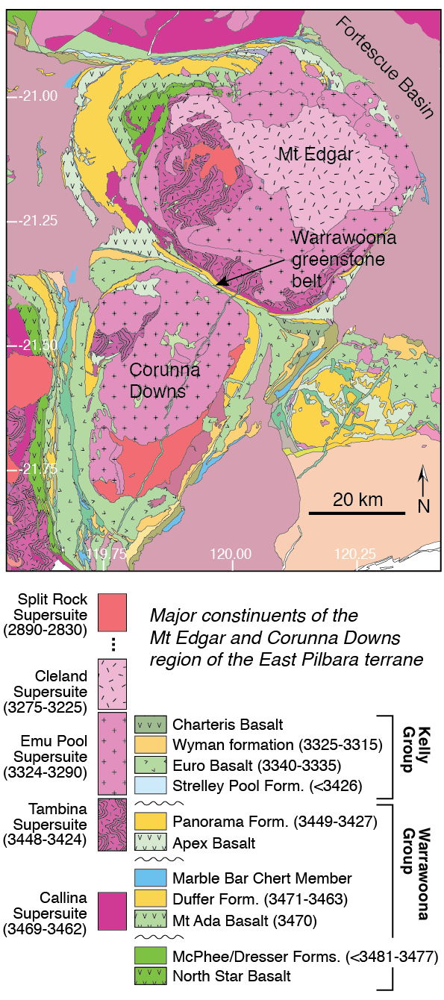

Research Interests
From the map scale to the microscale, I am interested in the kinematics and strain geometry of geologic systems, including the emplacement of structural domes, the localization of deformation in shear zones, and the way progressive deformation can lead to evolving structures.
My primary methods of investigation include field mapping, anisotropy of magnetic susceptibility (AMS), and electron backscatter diffraction (EBSD). For each of these data types, my approach to analysis emphasizes the quantification of uncertainty and rigorous statistical techniques. I am interested in developing new quantitative methods that provide a link between empirical structural geology with companion theoretical fields such as numerical modeling.
East Pilbara Research Team
This summer I was joined in the field by two Geoscience majors from UW Madison, Casey and Rex. The three of us spent six weeks mapping large scale folds in the Warrawoona syncline, and Rex and Casey will be doing independent studies and eventually senior theses focusing on different parts of these folded sequences. I also spent six weeks in the field with Ross Solerno, a PhD student at Washington State in Jeffrey Vervoort's geochemistry lab.

The Pilbara Craton
 Since 2016, we have been studying the boundary kinematics and internal structure of the Mt Edgar granitic complex, one of several 50 km-scale structural domes in the Paleoarchean East Pilbara block of the Pilbara craton. These large domes are separated by synformal belts of a very thick coeval supracrustal sequence of volcanics and sedimentary rocks. The East Pilbara block has been pointed to as a the type locality of a pre-plate tectonics process, but this hypothesis is a matter of ongoing debate. We are looking at the kinematics of the sheared boundary between the Mt Edgar granitic complex and the greenstone belt using microstructural analysis by Electron Backscatter Diffraction (EBSD). We are also conducting a magnetic fabrics of the weakly deformed granitoids within the Mt Edgar granitic complex using Anisotropy of Magnetic Susceptibility (AMS).
Statistical Analysis
I also work on the statistical treatment of high-dimensional structural geology data (like foliation-lineation pairs, strain ellipsoids), primarily with Joshua Davis at Carleton College. The advent of methods and tools for analyzing structural geology data statistically nicely coincides with a trend towards larger datasets, especially as new databases come online.
The structural geology community is in the middle of an exciting shift towards using statistical techniques to get more out of complex datasets, and recently developed techniques and software tools are making it possible to treat high-dimensional data holistically. My goal is to use these new statistical and software tools to push the boundaries of how structural geologists use statistics, and to allow others to do the same by publishing my R scripts on this website.